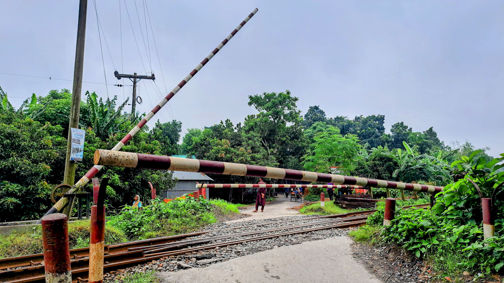
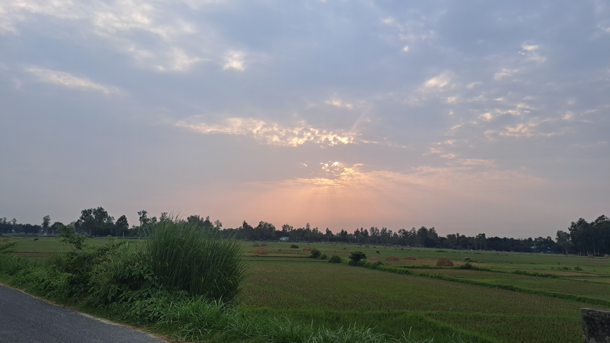
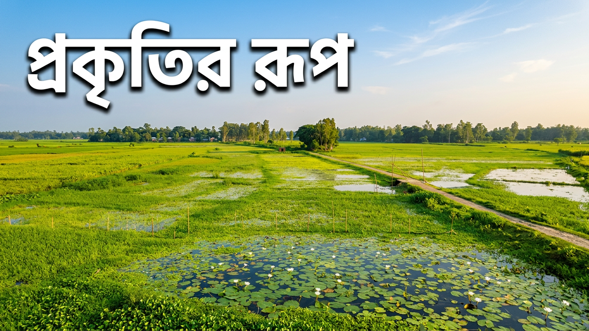
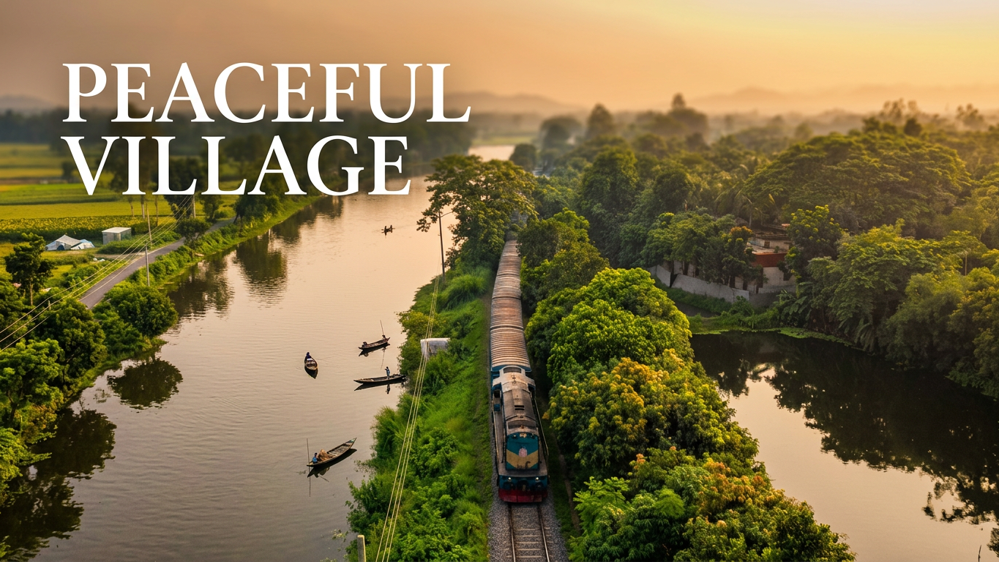
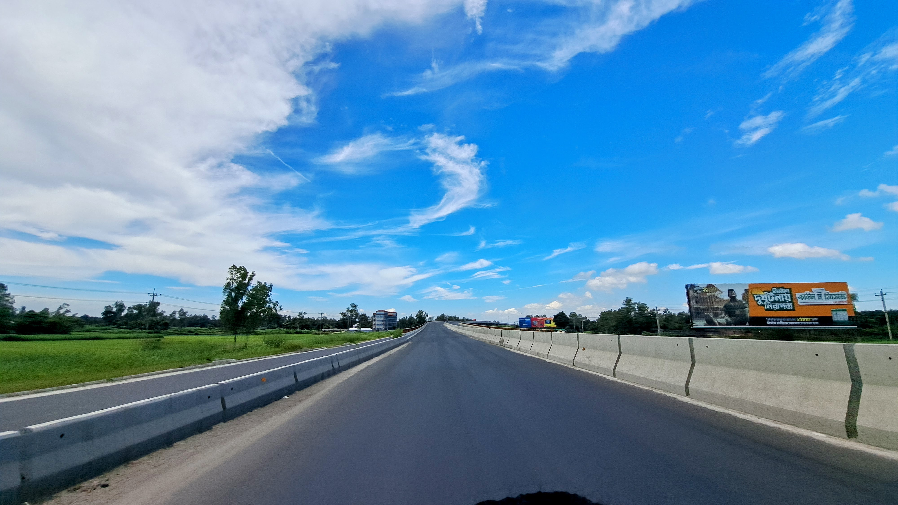
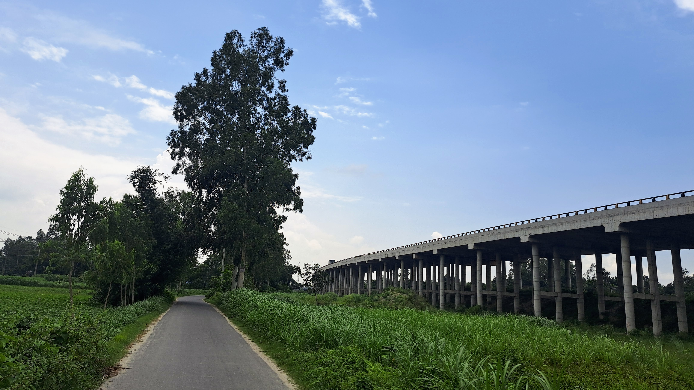
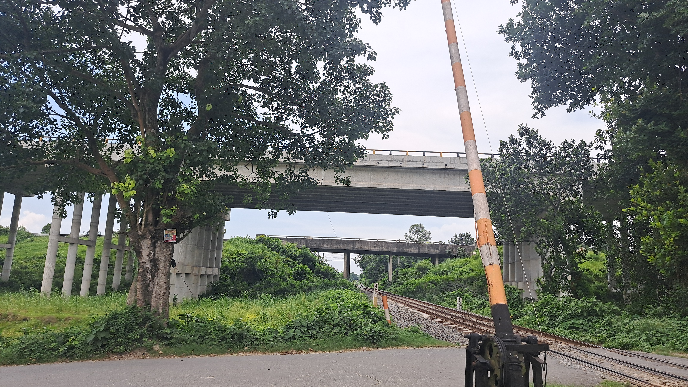
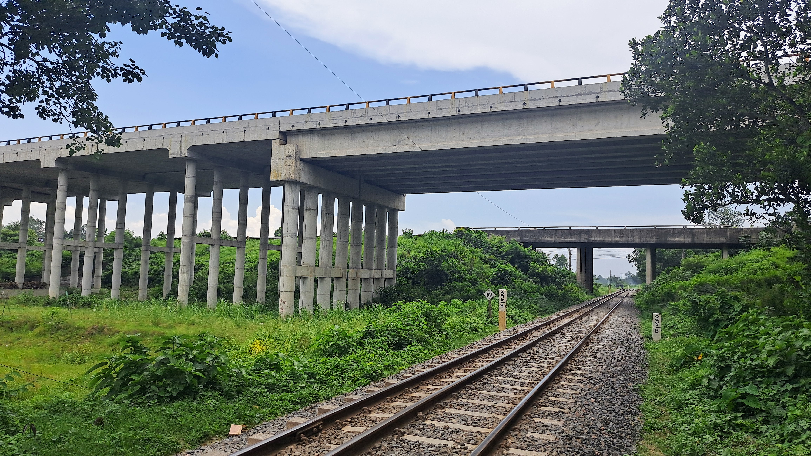
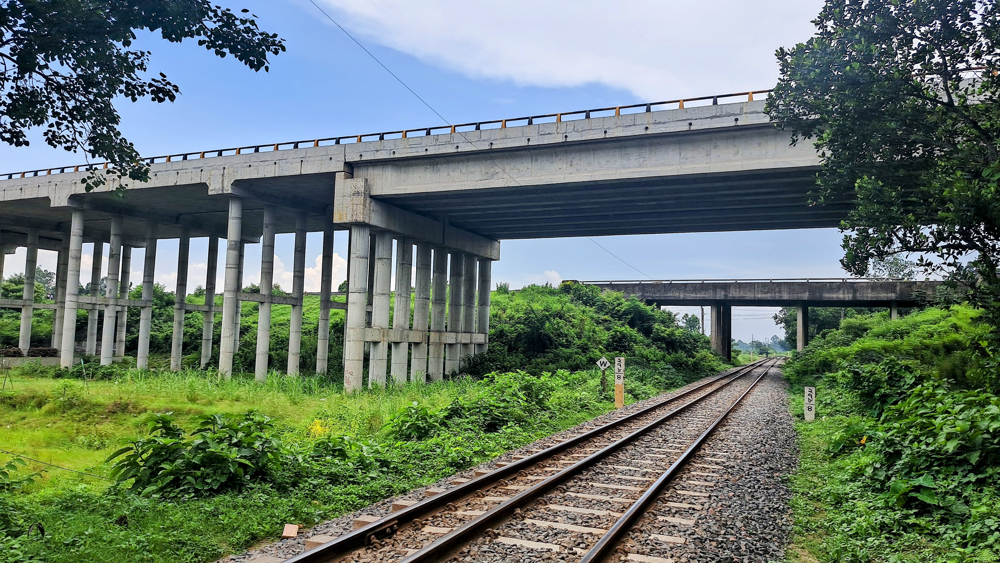

ঝাঐল গ্রাম Jhawoil Village
যমুনা নদীর পলিবিধৌত সবুজ শ্যামল উর্বর ভূখণ্ড, পাটিগণিতের সম্রাট যাদব চন্দ্র চক্রবর্তী-র পুণ্যভূমি এবং ৩৭৫ বছরের সমৃদ্ধ ইতিহাস, ঐতিহ্য, কুটির শিল্প ও সম্প্রীতির এক গৌরবময় জনপদ।
A vibrant green haven nourished by the Jamuna River, the revered birthplace of Arithmetic Emperor Jadab Chandra Chakravarti, and an illustrious sanctuary of 375+ years of folk heritage, Shital Pati craft, and social harmony.
পরিচিতি ও ভূ-প্রকৃতি Overview & Geography
ঐতিহাসিক পটভূমি Backgroundঝাঐল গ্রাম বাংলাদেশের উত্তরাঞ্চলের ঐতিহ্যবাহী ও প্রাণবন্ত জেলা সিরাজগঞ্জের কামারখন্দ উপজেলার অন্তর্গত একটি প্রাচীন, স্বনামধন্য ও ইতিহাসবাহী জনপদ। প্রমত্তা যমুনা নদীর উর্বর পলিমাটি বিধৌত এই সমভূমি শতাব্দী ধরে কৃষি, শিক্ষা, সংস্কৃতি, লোকজ কুটির শিল্প এবং অটুট সামাজিক সম্প্রীতির এক অনন্য মিলনস্থল হিসেবে সমাদৃত।
Jhawoil Village is a renowned and historic settlement situated under Kamarkhanda Upazila of Sirajganj district in northern Bangladesh. Blessed by the fertile silt of the mighty Jamuna River, this picturesque plain has stood for centuries as a glowing symbol of agrarian abundance, academic distinction, folk artistry, and unwavering social harmony.
ঢাকা-রাজশাহী মহাসড়কের সন্নিকটে অবস্থানের কারণে ভৌগোলিক ও কৌশলগত দিক থেকেও ঝাঐল অত্যন্ত গুরুত্বপূর্ণ। বিখ্যাত ঝাঐল ওভারব্রিজ ও সংলগ্ন মহাসড়ক প্রতিদিন দেশের হাজার হাজার মানুষের যাতায়াত সহজ করে তুলেছে। চারপাশে চিরসবুজ শস্যক্ষেত, শান্ত মেঠোপথ, পাখির কলকাকলি এবং স্নিগ্ধ গ্রামীণ পরিবেশ মিলেমিশে এক অপরূপ প্রশান্তির আবহ সৃষ্টি করেছে।
Nestled right beside the primary Dhaka-Rajshahi national highway, Jhawoil holds immense geographical and connectivity importance. The landmark Jhawoil Overbridge facilitates smooth daily transit for thousands of travelers across the country. Surrounded by verdant crop fields, peaceful village walkways, melodious birdsongs, and fresh breeze, it creates an atmosphere of serene tranquility.
নামকরণের ইতিহাস ও জনশ্রুতি Origin & Etymology
লোকশ্রুতি ও ইতিবৃত্ত Oral Loreযেভাবে উচ্চারিত হলো "ঝাঐল" How the name "Jhawoil" came to be
লোকসংস্কৃতি Folk Origin“ঝাঐল” নামের উৎপত্তি নিয়ে স্থানীয়ভাবে বেশ কয়েকটি চমকপ্রদ জনশ্রুতি প্রচলিত রয়েছে। প্রবীণদের বয়ান ও প্রাচীন বর্ণনামতে, শত শত বছর পূর্বে এই অঞ্চলটি ঘন ঝাউ বন, গভীর খাল-বিল এবং জলজ উদ্ভিদে পরিপূর্ণ ছিল। স্থানীয়দের মতে, সেই প্রাচুর্যপূর্ণ “ঝাউ” গাছের অস্তিত্ব ও লোকমুখের ধ্বনি পরিবর্তনের মধ্য দিয়ে ধীরে ধীরে “ঝাঐল” নামের রূপলাভ ঘটে।
There are fascinating oral traditions regarding how "Jhawoil" earned its name. According to local elders and folklore, centuries ago this area was carpeted with dense groves of Jhau trees (tamarisks/casuarinas), water reservoirs, and wetlands. Over time, the pervasive abundance of "Jhau" groves evolved phonetically in the local dialect into the present name "Jhawoil".
অন্য একটি মত অনুযায়ী, প্রাচীনকালে নদীপথে যাতায়াতকারী বণিক ও মাঝিরা দূর থেকে এই বনরাজিকে দেখে দিক নির্ণয় করতো। সময়ের সাথে সাথে আঞ্চলিক ভাষার টান ও উচ্চারণ প্রক্রিয়ার স্বাভাবিক বিবর্তনে এই নামটি বর্তমান রূপ লাভ করে গ্রামের পরিচয়পত্রে চিরস্থায়ী হয়ে ওঠে।
Another historical perspective recounts that ancient river merchants and boatmen used these thick groves as navigation landmarks along the Jamuna tributaries. Through generations of phonetic evolution, it became immortalized as the village's cherished identity.
ঐতিহাসিক গৌরব ও সময়রেখা Historical Journey & Timeline
যুগের পরিক্রমা Eras of Gloryনদী ও কৃষিকেন্দ্রিক সমৃদ্ধ জনবসতি
Riverine Agrarian Hub
যমুনার পলিবিধৌত মাটিতে প্রাচুর্যের সূচনা। নদীপথ ছিল তৎকালীন ব্যবসার প্রধান ধমনী। ধান, পাট ও কৃষি পণ্যের জন্য ঝাঐল পরিণত হয় আশেপাশের অন্যতম ব্যস্ত বাণিজ্য ও মিলনকেন্দ্রে।
Abundance blossomed upon the Jamuna silt. River channels served as vital commerce arteries, turning Jhawoil into a bustling center for agricultural trade and communal gatherings.
শিক্ষা আন্দোলন ও গণিত সম্রাট যাদব চন্দ্র চক্রবর্তীর জন্ম
Education Movement & Birth of Jadab Chandra
১৮৫৫ সালে এই গ্রামেই জন্মগ্রহণ করেন উপমহাদেশের প্রাতঃস্মরণীয় গণিতজ্ঞ যাদব চন্দ্র চক্রবর্তী। তাঁর সহজ ও প্রায়োগিক গণিত গ্রন্থাবলী ভারত, পাকিস্তান ও বাংলাদেশের কোটি কোটি শিক্ষার্থীর পাঠ্য হিসেবে অমূল্য অবদান রাখে।
In 1855, the legendary mathematician Jadab Chandra Chakravarti was born here. His master arithmetic textbooks educated millions of scholars across the Indian subcontinent.
মাতৃভূমির স্বাধীনতা সংগ্রামে অবিস্মরণীয় অবদান
Valiant Contribution to Freedom
১৯৭১ সালের মহান মুক্তিযুদ্ধে ঝাঐল গ্রামের বীর সন্তানেরা দেশমাতৃকার ডাকে জীবন বাজি রেখে মুক্তিযুদ্ধে ঝাঁপিয়ে পড়েন। মুক্তিযোদ্ধাদের আশ্রয়, খাদ্য ও যুদ্ধের প্রত্যক্ষ অংশগ্রহণ গ্রামের এক অবিচ্ছেদ্য গর্বের অধ্যায়।
During the 1971 Liberation War of Bangladesh, courageous youth from Jhawoil took up arms for national freedom. Providing shelter, logistics, and frontline bravery remains the village's eternal pride.
ঝাঐল ওভারব্রিজ, রেমিট্যান্স যোদ্ধা ও স্মার্ট প্রজন্ম
Jhawoil Flyover, Expat Remittance & Smart Youth
মহাসড়কের আধুনিক ওভারব্রিজ নির্মাণ, আন্তর্জাতিক অঙ্গনে কর্মরত প্রবাসী সন্তানদের অনুদান, আধুনিক শিক্ষা প্রতিষ্ঠান এবং ডিজিটাল প্ল্যাটফর্মে তরুণদের সচেতন উদ্যোগ গ্রামটিকে একটি আদর্শ জনপদে উন্নীত করেছে।
Modern infrastructure like the Jhawoil Flyover, generous contributions from global expatriates, high-achieving educational institutions, and digital community portals have elevated Jhawoil into a model village.
উপমহাদেশের গর্ব: গণিতবিদ যাদব চন্দ্র চক্রবর্তী Pride of the Subcontinent: Jadab Chandra Chakravarti
পাটিগণিতের সম্রাট Emperor of Arithmeticযাদব চন্দ্র চক্রবর্তী (১৮৫৫ – ১৯২০) Jadab Chandra Chakravarti (1855 – 1920)
আন্তর্জাতিক খ্যাতিমান শিক্ষাবিদ World-Renowned Educatorঝাঐল গ্রামের সর্বশ্রেষ্ঠ ঐতিহাসিক গর্ব হলেন অবিভক্ত ভারতবর্ষের কিংবদন্তিতুল্য গণিতবিদ ও শিক্ষাবিদ পণ্ডিত যাদব চন্দ্র চক্রবর্তী। তিনি ১৮৫৫ সালে এই ঝাঐল গ্রামেই এক সম্ভ্রান্ত পরিবারে জন্মগ্রহণ করেন। তাঁর মেধা, নিষ্ঠা ও গণিতশাস্ত্রের প্রতি অগাধ ভালোবাসা তাঁকে সমগ্র উপমহাদেশে অমর করে রেখেছে।
The greatest historical icon of Jhawoil Village is none other than the legendary educator and mathematician of undivided India, Pandit Jadab Chandra Chakravarti. Born in Jhawoil in 1855, his brilliance, pedagogy, and passion for mathematics elevated him to immortal prestige across South Asia.
তাঁর রচিত বিখ্যাত পাটিগণিত ও বীজগণিতের বইগুলো (যেমন: 'Arithmetic') বাংলা, ইংরেজি, হিন্দি, মারাঠি, উর্দু এবং বার্মিজ ভাষায় অনূদিত হয়ে সুদীর্ঘ কাল ভারত, পাকিস্তান, বার্মা ও বাংলাদেশের স্কুল-কলেজে পাঠ্যপুস্তক হিসেবে পঠিত হয়েছে। গণিত শিক্ষাকে মানুষের দোরগোড়ায় পৌঁছে দেয়ার অনন্য কৃতিত্বের জন্য তিনি সর্বসাধারণের কাছে “পাটিগণিতের সম্রাট” (Emperor of Arithmetic) হিসেবে বরণীয় হয়ে আছেন। ঝাঐলের প্রতিটি মানুষ আজও তাঁর জন্মভিটা ও স্মৃতিচিহ্নকে পরম শ্রদ্ধায় স্মরণ করে।
His monumental works were translated into English, Bengali, Hindi, Marathi, Urdu, and Burmese, serving as standard curricula across India, Pakistan, Myanmar, and Bangladesh. For revolutionizing mathematics pedagogy, he is rightfully revered as the "Emperor of Arithmetic". The people of Jhawoil cherish his ancestral soil and legacy with utmost veneration.
ঐতিহ্যবাহী লোকশিল্প ও শতবর্ষী মেলা Heritage Crafts & Centennial Fair
লোকজ ঐতিহ্য Folk Traditionsহাতে বোনা শীতল পাটি — বাংলার ঐতিহ্যবাহী কুটির শিল্প
Handcrafted Shital Pati — Traditional Cane Mat Weaving
ঝাঐল গ্রামের অন্যতম সুপ্রাচীন গৌরব হলো এখানকার ঐতিহ্যবাহী শীতল পাটি শিল্প। মুর্তা বা পাতি বেতের কাণ্ড থেকে নিপুণ দক্ষতায় সুক্ষ্ম আঁশ ছাড়িয়ে প্রজন্মের পর প্রজন্ম ধরে গ্রামের নারী ও কারিগররা পরম যত্নে এই পাটি তৈরি করে আসছেন। গ্রীষ্মের তীব্র গরমে এই শীতল পাটির প্রাকৃতিক স্নিগ্ধতা শরীর ও মনে শীতল পরশ এনে দেয়।
One of Jhawoil's most authentic historical crafts is the art of Shital Pati weaving. Harvesting fine natural reed fibres from Murta plants, village artisans and women have passed down this meticulous hand-weaving craft across generations. Renowned for its natural cooling property during scorching summers, it delivers supreme relaxation.
এই লোকজ কুটির শিল্প কেবল গ্রামের বহু পরিবার ও নারীকে অর্থনৈতিকভাবে স্বাবলম্বী করেনি, বরং জাতীয় পর্যায়ে বাংলার নিজস্ব হস্তশিল্পের মর্যাদা ও সৌন্দর্য অক্ষুণ্ণ রেখেছে।
Beyond providing economic self-reliance and empowerment to countless village women, this cottage industry continues to preserve Bangladesh's intangible cultural heritage.
ঐতিহাসিক ৩৭৫ বছরের “গোষ্ঠের মেলা” The 375-Year-Old Historic "Ghoshther Mela"
সাংস্কৃতিক মহোৎসব Grand Folk Carnivalপ্রতি বছর বৈশাখ মাসের শুভ পূর্ণিমা তিথিতে ঝাঐল গ্রামে অনুষ্ঠিত হয় প্রায় ৩৭৫ বছরের প্রাচীন ঐতিহাসিক “গোষ্ঠের মেলা”। কালের বিবর্তনে এটি কোনো বিশেষ সম্প্রদায়ের গণ্ডিতে সীমাবদ্ধ না থেকে পরিণত হয়েছে সকল ধর্ম, বর্ণ ও শ্রেণি-পেশার মানুষের মহামিলনক্ষেত্রে।
Every year during the auspicious full moon of Baishakh, Jhawoil comes alive with the grand 375-Year-Old "Ghoshther Mela". Over centuries, this fair has transcended religious boundaries, blossoming into a vibrant carnival of interfaith unity and celebration for people from all walks of life.
ঐতিহ্যবাহী কাঠের নাগরদোলা, গরম জিলাপি, বাতাসা, কদমা, মৃৎশিল্পের তৈরি খেলনা, মাটির হাঁড়ি-পাতিল, বাঁশের সামগ্রী এবং গ্রামীণ লোকসঙ্গীতের মধুর মূর্ছনায় মেলা প্রাঙ্গণ উৎসবের আমেজে মুখরিত হয়ে ওঠে। দূর-দূরান্ত থেকে আত্মীয়-স্বজন ও দর্শনার্থীরা এসে এই আনন্দ উৎসবে শামিল হন।
From iconic wooden ferris wheels and sizzling hot Jilapis to handmade clay toys, bamboo artifacts, and melodious folk music, the fair creates an enchanting festival atmosphere, drawing thousands of guests and returning families from across the country.
নয়নাভিরাম চিত্রশালা ও আলোকচিত্র (১০টি ছবি) Photo Gallery & Scenic Visuals (10 Photos)
ঝাঐলের রূপচিত্র Scenic Momentsক্যামেরার ফ্রেমে বন্দি ঝাঐল গ্রামের চিরসবুজ শ্যামলিমা, ঝাঐল রেল ক্রসিং, বিখ্যাত ওভারব্রিজ, রেললাইন, মহাসড়ক ও প্রাকৃতিক রূপের ১০টি বাছাইকৃত আলোকচিত্র। যে কোনো ছবিতে ক্লিক করে ফুলস্ক্রিন এইচডি ভিউ ও লাইটবক্স উপভোগ করুন:
Explore all 10 curated local photographs of Jhawoil Village — featuring the level crossing, lush green plains, the landmark overbridge, railway tracks, highway vistas, and serene wetlands. Click any photo to view in high-resolution fullscreen lightbox:









প্রকৃতি ও ষড়ঋতুর রূপসৌন্দর্য Nature & The Six Seasons
প্রাকৃতিক বৈচিত্র্য Seasonal Splendorবাংলাদেশের ছয়টি ঋতুর প্রতিটি ভিন্ন ভিন্ন রূপ নিয়ে আবির্ভূত হয় ঝাঐল গ্রামের শ্যামল প্রান্তরে। প্রতিটি ঋতুর সাথে বদলে যায় গ্রামের রূপ, রং ও কর্মচঞ্চল জীবনধারা:
All six traditional seasons of Bengal grace Jhawoil Village with distinct charm and natural vibrancy, transforming its lush fields and rural rhythm:
গ্রীষ্মকাল (Summer) Grishma (Summer)
আম, জাম, কাঁঠালের মিষ্টি সুবাস, রোদের ঝিকিমিকি এবং বটবৃক্ষের শীতল ছায়ায় মেঠোপথের প্রশান্তি।
Sweet aromas of mangoes and jackfruits, warm sunshine, and cool resting shades under ancient banyan trees.
বর্ষাকাল (Monsoon) Barsha (Monsoon)
খাল-বিল পানিতে টইটুম্বর, যমুনার পলিবিধৌত সতেজ সবুজ মাঠ এবং ডিঙি নৌকায় কৃষকের কর্মব্যস্ততা।
Brimming canals and wetlands, deep verdant fields washed by rains, and fishermen steering wooden dinghies.
শরৎকাল (Autumn) Sharat (Early Autumn)
নদীর তীরে শুভ্র কাশফুলের মেলা, নীল আকাশে ভেসে বেড়ানো পেঁজা তুলোর মতো সাদা মেঘের মনোরম দৃশ্য।
Silvery white Kash flowers swaying along riverbanks beneath deep blue skies filled with cotton clouds.
হেমন্তকাল (Late Autumn) Hemanta (Harvest)
সোনালি ধানের মৌ মৌ গন্ধ, কৃষকের নবান্ন উৎসবের আনন্দ এবং পিঠা-পায়সের মিষ্টি আয়োজন।
Golden ripe paddy fields waving in the breeze, vibrant Nabanna harvest celebrations, and fresh rice delicacies.
শীতকাল (Winter) Sheet (Winter)
ভোরের কুয়াশার চাদর, খেজুরের তাজা রস, ভাপা-চিতই পিঠার সুবাস ও সরিষা ক্ষেতের হলুদ সমুদ্র।
Misty fog-draped mornings, sweet date juice, sizzling rice cakes, and sprawling golden mustard blossoms.
বসন্তকাল (Spring) Basanta (Spring)
গাছে গাছে কচি পাতার শোভা, কোকিলের মিষ্টি কুহুতান এবং ফাগুনের রঙে রাঙানো গ্রামবাংলার প্রাণচাঞ্চল্য।
Fresh blooming foliage, sweet cuckoo calls, and lively village spirit celebrating new life and renewal.
অর্থনীতি, সমাজ ও জীবনযাত্রার স্তম্ভ Pillars of Life, Society & Economy
জীবনচিত্র Communityউর্বর কৃষি ও মৎস্য সম্পদ
Fertile Agriculture & Fisheries
ধান, পাট, গম, সরিষা, ভুট্টা ও মৌসুমি শাকসবজির বিপুল উৎপাদন। আধুনিক ডেইরি ও মৎস্য খামার গ্রামের অর্থনীতিতে নতুন গতি এনেছে।
Bountiful yields of rice, jute, wheat, mustard, and vegetables, complemented by modern dairy and fish hatcheries.
ধর্মীয় ও সামাজিক সম্প্রীতি
Communal & Religious Harmony
মুসলিম, হিন্দুসহ সকল ধর্মের মানুষ যুগের পর যুগ পারস্পরিক শ্রদ্ধা ও ভালোবাসায় বসবাস করছেন। ঈদ ও পূজায় মিলেমিশে উদযাপনই গ্রামের বড় শক্তি।
Muslims and Hindus coexist in peaceful fraternity. Joyous mutual participation in Eid, Puja, and festivals defines local unity.
শিক্ষা বিস্তার ও মেধার বিকাশ
Education & Academic Excellence
স্কুল ও মাদ্রাসার পাশাপাশি ঝাঐলের মেধাবী শিক্ষার্থীরা দেশের শীর্ষস্থানীয় বিশ্ববিদ্যালয়, মেডিকেল কলেজ ও ইঞ্জিনিয়ারিং প্রতিষ্ঠানে অধ্যয়ন করছে।
From primary institutions to national universities, medical and engineering colleges, Jhawoil's students excel nationwide.
খেলাধুলা ও তারুণ্যের শক্তি
Sports & Dynamic Youth
ফুটবল, ক্রিকেট, ভলিবল ও হা-ডু-ডু টুর্নামেন্ট নিয়মিত আয়োজিত হয়। তরুণ সমাজ মাদক ও অসামাজিক কার্যকলাপমুক্ত সমাজ গঠনে ঐক্যবদ্ধ।
Thriving local football, cricket, and volleyball tournaments bring energy and keep the youth united and active.
প্রবাসী সমাজের রেমিট্যান্স ও অবদান
Global Expatriates & Remittance
বিশ্বের বিভিন্ন দেশে কর্মরত ঝাঐলের প্রবাসীরা গ্রামের উন্নয়ন, মসজিদ-মন্দির সংস্কার, দরিদ্রদের চিকিৎসা ও শিক্ষা তহবিলে অকাতরে অনুদান দিয়ে আসছেন।
Hardworking villagers living abroad send vital remittances and generously fund local development, education, and healthcare.
লোকসংস্কৃতি ও বৈশাখী উৎসব
Folk Culture & Boishakhi Rites
পালাগান, জারিগান, বাউল সংগীত, শীতের পিঠা উৎসব ও পহেলা বৈশাখের ঐতিহ্য আজও গ্রামের সংস্কৃতিকে প্রাণবন্ত করে রেখেছে।
Pala-gaan, Baul songs, winter pitha carnivals, and Bengali New Year celebrations keep the rich cultural tapestry alive.
নারী ক্ষমতায়ন ও কুটির শিল্প
Women Empowerment & Crafts
শীতল পাটি বুনন, নকশিকাঁথা সেলাই এবং হস্তশিল্পে গ্রামীণ নারীরা স্বাবলম্বী হয়ে পরিবারের সচ্ছলতায় বড় ভূমিকা রাখছেন।
Through Shital Pati weaving and handcrafted embroidery, local women achieve financial independence and leadership.
ডিজিটাল সংযোগ ও সোশ্যাল নেটওয়ার্ক
Digital Connectivity & Outreach
ফেসবুক, ইউটিউব ও ওয়েবসাইটের মাধ্যমে ঝাঐল গ্রামের ইতিহাস ও উন্নয়ন বিশ্বমঞ্চে প্রতিনিয়ত তুলে ধরছেন উদ্যমী তরুণরা।
Empowered by digital platforms, proactive youth share the village's achievements and stories with the worldwide audience.
মানচিত্র ও যাতায়াত নির্দেশিকা Map & Travel Directions
লোকেশন গাইড Route Guideঝাঐল গ্রাম সিরাজগঞ্জের কামারখন্দ উপজেলায় ঢাকা-রাজশাহী মহাসড়কের সন্নিকটে অবস্থিত হওয়ায় দেশের যে কোনো প্রান্ত থেকে এখানে যাতায়াত অত্যন্ত সহজ ও সুবিধাজনক:
Being located directly alongside the major Dhaka-Rajshahi national highway, reaching Jhawoil from any corner of Bangladesh is fast and straightforward:
ঢাকা থেকে (From Dhaka)From Dhaka Capital
গাবতলী বা মহাখালী থেকে উত্তরবঙ্গগামী যে কোনো বাসে উঠে যমুনা (বঙ্গবন্ধু) সেতু পার হয়ে ঝাঐল ওভারব্রিজ পয়েন্টে নামলেই সরাসরি গ্রামে প্রবেশ করা যায়।
Board any North Bengal-bound bus from Gabtoli or Mohakhali, cross Bangabandhu Jamuna Bridge, and disembark directly at the Jhawoil Overbridge stoppage.
সিরাজগঞ্জ শহর থেকে (From Sirajganj)From Sirajganj City
সিরাজগঞ্জ বাজার স্টেশন বা শহর থেকে সিএনজি/অটোরিকশায় কামারখন্দ হয়ে খুব সহজেই মাত্র ১৫-২০ মিনিটে ঝাঐল গ্রামে পৌঁছানো যায়।
From Sirajganj city center or Bazar Station, take a CNG auto-rickshaw via Kamarkhanda; reach Jhawoil within 15–20 pleasant minutes.
উত্তরবঙ্গ / বগুড়া / রাজশাহী থেকেFrom Bogura / Rajshahi
হাটিকুমরুল (গোলচত্বর) ইন্টারচেঞ্জ পার হয়ে ঢাকা অভিমুখে মাত্র কয়েক কিলোমিটার এগোলেই ঝাঐল ওভারব্রিজ অবস্থিত।
From Hatikumrul Interchange, head eastwards towards Dhaka for a few kilometers to arrive at the Jhawoil Overbridge stop.
ডিজিটাল ঝাঐল — অফিসিয়াল ভিডিও ও মুহূর্ত Digital Jhawoil — Official Videos & Media
YouTube Hubভিডিও ও ক্যামেরার চোখে উপভোগ করুন ঝাঐল গ্রামের নান্দনিক প্রাকৃতিক রূপ, ওভারব্রিজ, রেললাইন, গ্রামীণ জীবনধারা, উৎসব এবং স্থানীয় ঐতিহ্যের জীবন্ত প্রামাণ্যচিত্র।
Experience the breathtaking landscape, iconic Jhawoil Overbridge, railway corridor, cultural festivities, and rural life through our curated official YouTube videos.
ঝাঐল — ঐতিহ্য, গৌরব ও ভালোবাসার প্রতীক Jhawoil — An Eternal Symbol of Pride & Love
ঝাঐল শুধু একটি ভৌগোলিক মানচিত্রের নাম নয়; এটি আমাদের পূর্বপুরুষের স্মৃতি, শিক্ষা ও সংস্কৃতির গৌরব, শীতল পাটির নিখুঁত কারুকাজ, নদীবিধৌত জীবনের সংগ্রাম এবং অফুরন্ত মানুষের ভালোবাসার এক চিরন্তন প্রতিচ্ছবি। অতীতের ঐতিহ্যকে হৃদয়ে ধারণ করে আধুনিক বিশ্বের সাথে তাল মিলিয়ে এগিয়ে চলেছে আমাদের প্রিয় ঝাঐল গ্রাম।
Jhawoil is far more than a spot on the geographical map; it is the enduring sanctuary of our ancestral memories, academic prestige, exquisite Shital Pati artistry, the spirit of riverine resilience, and boundless mutual love. Holding past glory close to heart, Jhawoil proudly marches towards a bright and enlightened future.